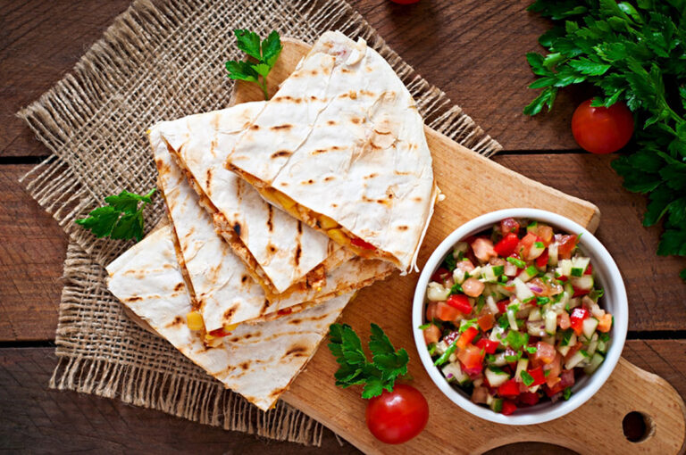

Time Management
October 3, 2021 by Chadric Nathan
Time is a finite resource and waits and no one. In university, this is the most important resource that students, such as myself struggle to efficiently manage.After researching and interviewing student such as myself, I came up with tips and strategies for managing time
Identify what you need to do, and then prioritize the tasks based on when the assignment is due and how much time you need to complete it. This gives you a set plan for the day. Whether it’s just a list of priorities or a full schedule for the day, having a plan will ensure that you know what to do and when.
Quick College Meals
October 3, 2021 by Chadric Nathan
Preparing meals in college can be a hassle as students generally dont have time in between classes to cook food of substantial nutrients. I started by googling ideas and quickly found that most lists of college meals have some problems:
most are just links to recipes that make 4-6 servings, which is NOT practical for a college student
many require a full pantry of ingredients and seasonings, which is also NOT practical for a college student
many take over half an hour to make (which, again, is not practical)
So I put together an easy meal. These are things students can put together quickly using a small number of ingredients making just ONE serving at a time. But they all taste better than Ramen! And if you do want to cook for your whole apartment occasionally,

Chicken and Cheese Quesadilla: Spread a thin layer of ranch dressing on a tortilla and sprinkle with taco season or chili powder and cumin. Top with cooked chicken and grated cheese. Fold over or top with a second tortilla and toast on a large skillet until cheese is melted and chicken is warm. Optional: melt butter in the skillet first for a toastier outside